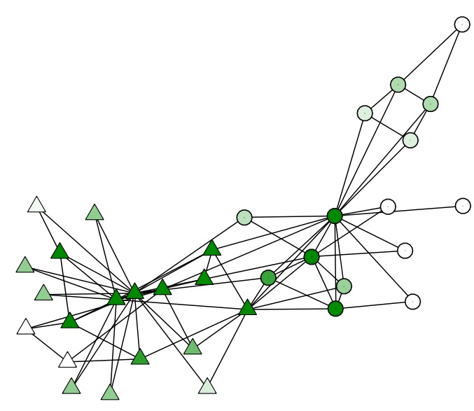
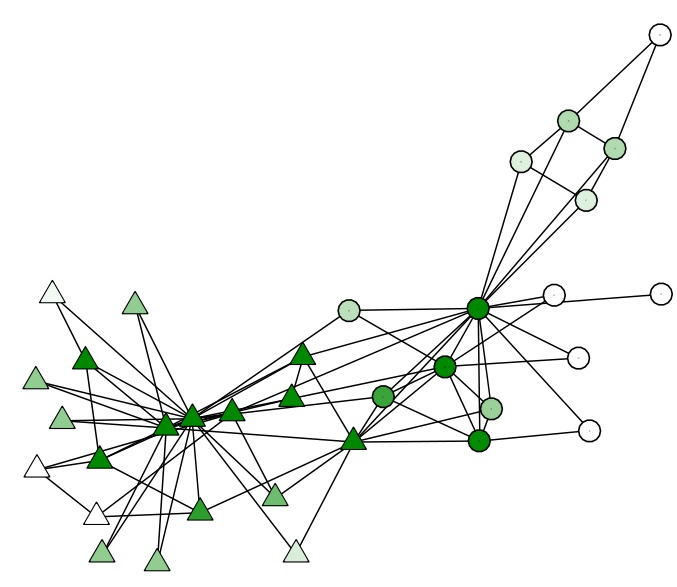

テンポラルネットワーク
現実に現れる複雑ネットワークは時間にたいして変化する（すなわち、頂点同士のつながり方は動的に変化する）ものの，これまでのアプローチでは多くの場合静的なネットワークに焦点がおかれてきました．本研究では，テンポラルネットワーク上における動的システムの解析・制御・最適化のための厳密かつ扱いやすい枠組みの開発を目標としています．
適応的に変化するネットワーク上での感染症の抑え込み
感染症のダイナミクスとテンポラルネットワークのダイナミクスは従来別個に扱われてきたが，これらのダイナミクスが相互に影響し合う場合は数多くあります．例えばsocial distancingの場合，健康な個人は感染者との接触を避けます．これは，感染症の挙動にたいしてネットワークが「適応的」に変化することを意味します．この研究では，適応的に変化するネットワーク上の感染症のダイナミクスの理解およびその最適な制御手法の開発を最適に押さ目標としています[PRE16, CDC15].
 

大規模ネットワーク上の伝播過程
大規模ネットワーク上の伝播過程が終息するための条件を，大きさにネットワークのサイズにたいして線形に増加する行列の固有値を用いて与えました．条件の導出には，ランダム行列の理論と線形切替システムの理論を用いました．[TNSE, ACC15].

Control of spreading processes
Optimal resource distribution
複雑ネットワーク上で伝播過程を最小コストで押さえ込むための資源配分問題を，凸最適化の手法を用いて効率的に 解く手法を開発しました[TCNS, CDC16, ACC15].


Switched systems
Stability analysis
種々のクラスの線形切替システムの安定性判別を行っています[Automatica, SCL, SICON]

Bet-hedging strategies in biological populations
[CDC16]